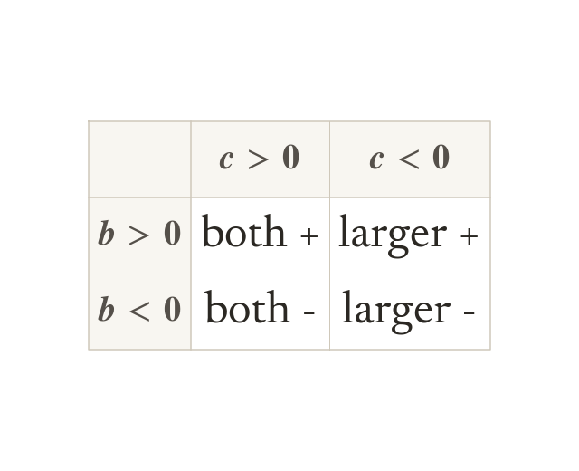

The signs come from c, then b
A positive c means both numbers take the sign of b. A negative c means different signs. The larger number takes the sign of b.
A positive c means the two numbers share a sign, and it is the sign of b. A negative c means the signs differ, and the larger number takes the sign of b.